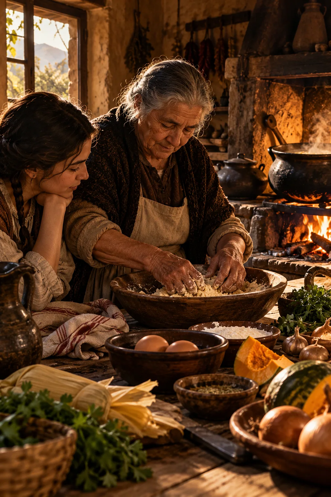

Sabores que cuentan historias
Hay historias que se escriben con tinta. Otras permanecen en el aroma de una cocina, en las manos que amasan y en los sabores que una generación entrega a la siguiente.
La memoria tiene aroma
Hay recuerdos que no necesitan palabras para regresar.
Basta el olor de una cebolla dorándose lentamente, el vapor que escapa de una olla o el sonido de una masa golpeando una mesa enharinada.
De pronto, algo que parecía olvidado vuelve a existir.
Una cocina. Una voz. Una tarde de invierno. Alguien que ya no está.
La memoria humana tiene una relación extraordinaria con los sentidos. Un aroma puede despertar recuerdos que permanecían dormidos durante décadas. Un sabor puede devolvernos, por un instante, a un lugar que ya no existe de la misma manera.
Y pocas actividades reúnen tantos sentidos como cocinar.
La cocina tiene sonidos, temperaturas, texturas, colores y aromas. También tiene palabras, gestos, herramientas y pequeños rituales que se repiten de una generación a otra.
Pero, sobre todo, tiene personas.
Detrás de cada preparación tradicional existe una historia que rara vez aparece escrita en los recetarios.
Alguien aprendió observando. Alguien improvisó cuando faltaba un ingrediente. Alguien conservó una costumbre porque era la manera en que siempre se había hecho en su casa.
Así, casi sin proponérselo, las familias fueron construyendo una forma particular de recordar.
Porque cocinar no consiste solamente en transformar alimentos.
También puede ser una manera de conservar el pasado.

Antes de las recetas, estaban las manos
Durante buena parte de la historia, el conocimiento culinario circuló sin necesidad de libros.
Las preparaciones se aprendían mediante la observación, la repetición y la experiencia.
Las cantidades podían medirse con un puñado, una taza o una pizca. Los tiempos no siempre dependían de un reloj, sino del aspecto de la masa, del sonido de la fritura o del momento en que un guiso alcanzaba su punto.
Las instrucciones estaban llenas de expresiones que cualquier cocinero experimentado comprendía, pero que resultaban difíciles de traducir a medidas exactas.
Hasta que tome cuerpo.
Hasta que esté doradito.
Hasta que la masa esté suave.
Hasta que esté listo.
Aquellas indicaciones no eran necesariamente imprecisas. Respondían a una forma de conocimiento construida mediante los sentidos.
Quien había observado preparar una receta durante años sabía reconocer el momento adecuado.
Y ese saber podía transmitirse sin que nadie escribiera una sola línea.
Por eso las recetas tradicionales no son únicamente listas de ingredientes.
Son también procedimientos, experiencias y maneras de interpretar aquello que ocurre frente al fuego.
Cuando desaparece la persona que conocía esos gestos, puede perderse mucho más que una preparación.
Puede desaparecer una forma completa de hacer las cosas.
Un territorio también se cuenta desde su mesa
Cada cocina tradicional mantiene una relación profunda con el lugar donde se desarrolla.
El clima determina qué puede cultivarse. Las estaciones condicionan la disponibilidad de los productos. Los caminos permiten el intercambio. Las actividades económicas influyen en los horarios, las necesidades y las costumbres alimentarias.
La comida es, en cierto sentido, una expresión del territorio.
En el valle de Aconcagua, la historia agrícola ha dejado una huella importante en la vida cotidiana.
Las tierras cultivadas, los canales de riego, las huertas, los frutales y los viñedos forman parte de un paisaje donde el trabajo humano y los ciclos naturales se encuentran desde hace generaciones.
A lo largo del tiempo, las cocinas locales han reunido productos, técnicas y tradiciones procedentes de distintas épocas.
La alimentación de los pueblos originarios, los ingredientes y animales introducidos durante la colonización, las prácticas rurales y los intercambios posteriores contribuyeron a formar un repertorio culinario diverso.
No existe una frontera sencilla entre aquello que pertenece exclusivamente a una tradición y lo que llegó desde otra.
Las cocinas cambian, incorporan ingredientes y adaptan procedimientos.
Una receta que hoy consideramos profundamente nuestra puede ser el resultado de encuentros culturales ocurridos durante siglos.
Y esa mezcla no disminuye su valor.
Al contrario, revela que el patrimonio culinario está vivo.
El fuego lento y el tiempo de las cosas
Hubo una época en que cocinar exigía mantener una relación constante con el fuego.
La leña debía prepararse. Las brasas necesitaban atención. La temperatura se regulaba acercando o alejando los recipientes, moviendo las ollas o modificando la intensidad de la combustión.
Cocinar era también aprender a interpretar el calor.
Las preparaciones de larga cocción requerían paciencia. Algunos alimentos necesitaban horas para alcanzar la textura adecuada. Otros debían removerse, vigilarse o dejarse reposar.
El tiempo no era simplemente una cifra indicada en una receta.
Era parte del proceso.
En torno al fogón, la cocina podía convertirse además en un lugar de reunión.
Mientras una olla permanecía sobre el fuego, había espacio para conversar, contar noticias, recordar acontecimientos o transmitir pequeñas enseñanzas.
No todas las cocinas fueron lugares amables, ni todo trabajo culinario estuvo libre de esfuerzo. Preparar alimentos implicaba largas jornadas y tareas que muchas veces recayeron de manera desigual sobre las mujeres.
Reconocer ese trabajo también forma parte de conservar la memoria.
Porque detrás de la imagen entrañable de una cocina antigua hubo personas que sostuvieron cotidianamente la alimentación de sus familias.
Sus conocimientos merecen ser recordados tanto como sus recetas.
Las comidas que reúnen a una comunidad
Algunas preparaciones adquieren un significado especial porque aparecen en determinados momentos del año.
Hay comidas asociadas a las cosechas, a las fiestas religiosas, a las celebraciones familiares o a los encuentros comunitarios.
En Chile, las empanadas, las cazuelas, las humitas, los porotos y tantas otras preparaciones pueden adquirir sentidos diferentes según el lugar y la ocasión.
Una misma receta puede variar entre familias, pueblos y regiones.
Cambian los aliños, las proporciones, las formas de cocción y los acompañamientos.
A veces esas diferencias generan discusiones apasionadas.
Cuál es la preparación auténtica.
Cuál es la receta original.
Quién la hace como corresponde.
Sin embargo, quizás una de las características más interesantes de la cocina tradicional sea precisamente su diversidad.
Las recetas no han permanecido inmóviles.
Han viajado, se han adaptado y han cambiado junto con las comunidades que las preparan.
La tradición no siempre consiste en repetir exactamente lo que hicieron nuestros antepasados.
A veces consiste en mantener vivo un conocimiento mientras se adapta a nuevas circunstancias.
Lo que permanece no es necesariamente una fórmula idéntica.
Es el vínculo entre las personas y aquello que comparten.
El recetario que nunca se escribió
En muchas familias existe una persona que conoce las recetas de todos.
Sabe preparar aquel guiso que aparece en las reuniones importantes. Recuerda cómo se hacía una conserva. Conoce el secreto de una masa o la cantidad exacta de aliño que necesita una preparación.
Pero cuando alguien le pregunta por la receta, la respuesta suele ser desconcertante.
No tiene receta.
Lo hace de memoria.
Ese conocimiento parece inagotable mientras la persona está presente.
Sin embargo, llega un momento en que alguien intenta reproducir una preparación familiar y descubre que faltan instrucciones.
¿Cuánta harina utilizaba?
¿En qué momento agregaba el agua?
¿La olla debía permanecer tapada?
¿Era necesario dejar reposar la masa?
Las respuestas que antes parecían evidentes se vuelven difíciles de recuperar.
Entonces comprendemos que una receta puede desaparecer sin que se pierda ninguno de sus ingredientes.
Basta con que se interrumpa la transmisión de sus procedimientos.
Por eso registrar las preparaciones familiares tiene un valor que va mucho más allá de la gastronomía.
Escribir una receta, fotografiar sus etapas o conversar con quien la prepara puede convertirse en una forma de preservar memoria.
Pero hay algo que ningún registro sustituye completamente.
Cocinar junto a otra persona.
Observar sus movimientos. Escuchar sus explicaciones. Reconocer los pequeños gestos que rara vez aparecen en las instrucciones.
Porque hay conocimientos que todavía necesitan pasar de unas manos a otras.
Cuando la cocina se convierte en patrimonio
La palabra patrimonio suele hacernos pensar en monumentos, edificios antiguos, documentos o piezas conservadas en museos.
Sin embargo, una parte fundamental de la herencia cultural de las comunidades no puede guardarse dentro de una vitrina.
Está formada por conocimientos, prácticas, expresiones y tradiciones que las personas mantienen vivas.
La cocina pertenece también a ese universo.
Las técnicas de preparación, los conocimientos sobre ingredientes, las costumbres alimentarias y las celebraciones asociadas a determinados platos pueden formar parte del patrimonio cultural inmaterial de una comunidad.
Su valor no depende exclusivamente de la antigüedad de una receta.
Tampoco exige que una preparación permanezca idéntica durante siglos.
Lo importante es que las personas reconozcan en ella una expresión significativa de su historia y de su identidad.
Preservar ese patrimonio no significa convertir la cocina tradicional en una pieza intocable.
Significa favorecer que sus conocimientos continúen circulando.
Que las recetas se preparen.
Que las personas mayores puedan transmitir lo que saben.
Que las nuevas generaciones encuentren motivos para aprender.
Y que las transformaciones inevitables no borren completamente la memoria de aquello que existió antes.
Las personas detrás de los sabores
Cuando hablamos de patrimonio gastronómico, resulta fácil concentrarnos en los platos terminados.
Una empanada recién salida del horno. Una olla humeante. Una mesa preparada para una celebración.
Pero cada alimento tiene una historia anterior.
Está quien sembró y cosechó. Quien cuidó los animales. Quien transportó los productos. Quien vendió los ingredientes en una feria. Quien encendió el fuego y dedicó horas a preparar la comida.
También están quienes conservaron semillas, transmitieron técnicas y adaptaron recetas cuando cambiaron las condiciones de vida.
La cocina tradicional es el resultado de una red de conocimientos y trabajos que muchas veces permanecen invisibles.
Por eso recuperar una receta puede ser también una oportunidad para recuperar los nombres y las experiencias de quienes la mantuvieron viva.
Una preparación puede conducirnos a la historia de una familia.
Una familia, a la historia de un oficio.
Y un oficio, a la historia de todo un territorio.
A veces basta comenzar preguntando cómo se hacía una comida para descubrir un mundo entero.
Aconcagua a Fuego Lento: guardar lo que todavía vive
Aconcagua a Fuego Lento nace de una inquietud profundamente vinculada con esa memoria.
La de mirar nuestro territorio no solamente a través de sus paisajes, acontecimientos y personajes, sino también mediante aquello que se ha preparado y compartido en sus cocinas.
Porque la identidad de un valle no se encuentra únicamente en sus edificios históricos o en los documentos que conservan sus archivos.
También vive en las costumbres cotidianas.
En los ingredientes que regresan con cada estación.
En las preparaciones que acompañan las celebraciones.
En las técnicas que una generación aprende de otra.
Acercarse a ese universo significa reconocer que la gastronomía puede ser una puerta de entrada a la historia local.
Cada receta invita a formular nuevas preguntas.
¿De dónde proceden sus ingredientes?
¿Cuándo comenzó a prepararse?
¿Quiénes la cocinaban?
¿En qué ocasiones se compartía?
¿Qué transformaciones ha experimentado?
No siempre encontraremos respuestas definitivas.
Y eso también forma parte de la investigación patrimonial.
Las tradiciones culinarias rara vez tienen un único origen perfectamente documentado. Muchas son el resultado de procesos largos, intercambios culturales y adaptaciones sucesivas.
Pero escuchar sus historias permite comprender mejor a las comunidades que las conservan.
Y, sobre todo, nos recuerda que todavía estamos a tiempo de registrar muchos conocimientos que permanecen vivos.
Lo que queda después de la última cucharada
Una comida termina.
Los platos se retiran, el fuego se apaga y las personas abandonan la mesa.
Sin embargo, algo puede permanecer durante muchos años.
Quizás una conversación.
Quizás una celebración familiar.
Quizás el recuerdo de alguien que preparaba una receta de una manera que nadie ha conseguido repetir exactamente.
La cocina tiene esa capacidad extraordinaria de convertir momentos cotidianos en recuerdos duraderos.
Y también puede hacer el camino inverso.
Una preparación conocida puede devolvernos, por un instante, a las personas y los lugares que forman parte de nuestra historia.
Por eso conservar una receta es mucho más que guardar instrucciones.
Es proteger una pequeña porción de memoria colectiva.
Los ingredientes cambiarán. Las cocinas tendrán otras herramientas. Nuevas generaciones incorporarán sus propias costumbres.
Pero mientras alguien continúe preparando aquellas comidas y compartiendo sus historias, una parte del pasado seguirá presente.
Tal vez ése sea el verdadero sentido de cocinar a fuego lento.
No solamente dar tiempo a los alimentos para transformarse.
Sino dar tiempo a las historias para permanecer.
Dentro de las páginas es el espacio editorial y cultural de Plegadera Ediciones: una invitación a descubrir las épocas, ideas, símbolos y personas que existen detrás de los libros que publicamos.
Porque algunas historias no terminan en la última página.
Descubre Aconcagua a Fuego Lento en nuestro catálogo.